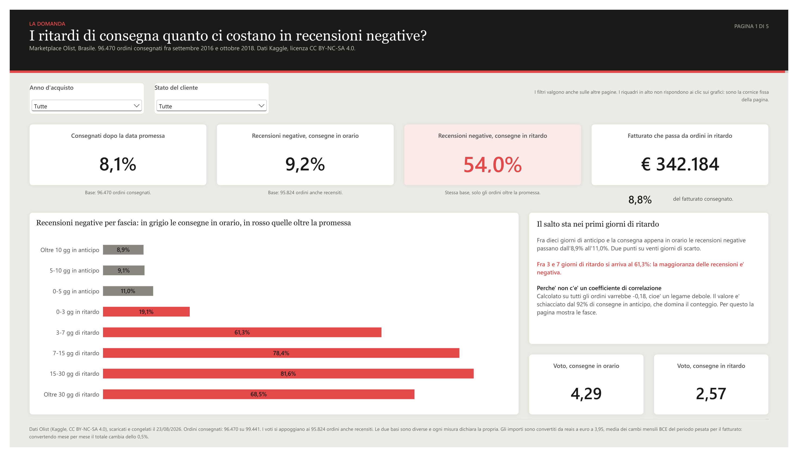
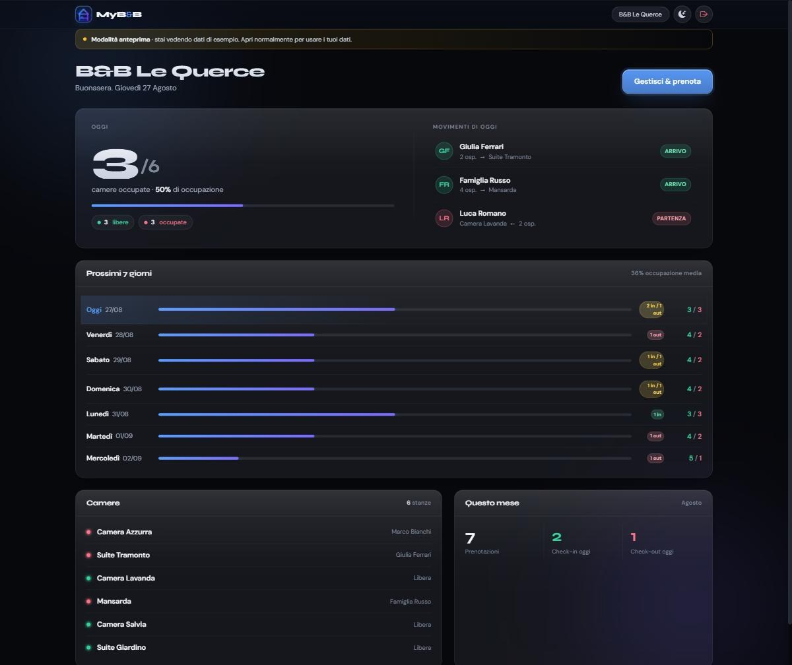
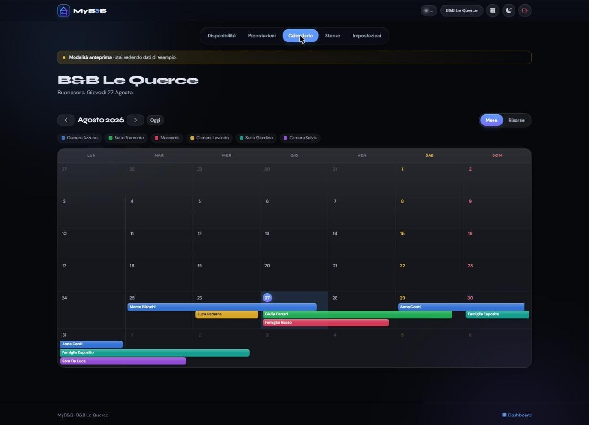

pandas · NumPy · SciPy · MySQL · PostgreSQL ·
ETL e pipeline · pulizia e deduplica · validazione e data quality ·
statistica applicata (bootstrap, correlazione, calibrazione)
Analisi e BI
Power BI (DAX, Power Query, modello a stella) · dashboard interattive ·
reportistica · Plotly · export CSV · Excel e CSV in ingresso ·
KPI e metriche composite
Test automatici · documentazione tecnica · codice riproducibile ·
limiti dichiarati insieme ai risultati
Il dominio in cui l’ho dimostrato spesso è il calcio, ed è una scelta:
sono dati pubblici, chiunque può rifare i conti e dirmi che ho sbagliato. Il mestiere
— pulire, modellare, misurare, spiegare — è lo stesso su un magazzino,
su un CRM o su un bilancio.
Gli stessi cinque, per estesoCome sono fatti, e dove sbagliano
Football Scout Index
Demo online
Modellare e validare: da un database di 23.858 righe a una metrica che dichiara i propri limiti. Due campionati, un motore solo.
Un database MySQL di 23.858 righe giocatore-partita su due stagioni,
alimentato da due fonti diverse agganciate per identificativo e non per nome, con le
riparazioni per righe orfane e doppioni scritte e ripetibili. Sopra, una metrica composita
a sette dimensioni che ordina 356 giocatori, e una dashboard con filtri,
cinque contesti, confronto testa a testa ed export CSV di ciò che stai guardando.
Lo stesso motore serve anche la Premier League: il campionato è un
parametro, come la stagione. Nessun fork, nessuna seconda copia da tenere allineata —
una correzione resta una correzione sola, e i due indici restano confrontabili perché
i pesi non sono tarati su nessuno dei due. Cambiano solo i dati, la lingua di partenza e le
verifiche che in Inghilterra non si possono fare: quelle che si appoggiano a fonti italiane
la pagina le dichiara non applicabili invece di ometterle.
Le quindici verifiche sono pubblicate intere, con l’intervallo di
confidenza accanto: compresa quella costruita per bocciare il modello, che in parte lo
boccia. Contro tre predittori elementari non ne batte nessuno sul livello di rendimento
futuro; sulla domanda per cui era nato — chi migliorerà rispetto a sé
stesso — ne batte due su tre. Un indice che non ha mai perso è solo un indice
che non è mai stato messo alla prova.
Ogni punto e’ uno dei 356 giocatori qualificati. In alto ci sono quasi solo
giocatori fra i 27 e i 31 anni: l’indice premia chi e’ nel pieno. Nella fascia
chiara gli otto sotto i 23 che stanno già nella parte alta — quelli che un
club puo’ ancora comprare e rivendere. Non dice quanto costano.
Generato dal CSV pubblico con grafico_tpi_eta.py.
Sopra questa misura ho costruito heXI, un sistema di supporto alle
decisioni di mercato per un club: se l’indice dice chi è forte, heXI risponde
alla domanda dopo — chi sostituisce chi, e che cosa si rompe nella squadra se lo
firmi. Autenticazione, multi-utente, API versionata, ricerca per similarità su
vettori giocatore. Repository privato: lo mostro volentieri in colloquio.
Python · pandas · SciPy · MySQL · test di regressione · GitHub Actions
Un milione di righe di scontrini e una domanda sola: conviene di più trattenere un cliente o acquisirne uno nuovo?
Online Retail II, un negozio online britannico di articoli da regalo:
1.067.371 righe fra dicembre 2009 e dicembre 2011. Schema a stella su MySQL,
63 controlli di integrità e un audit che rilegge le query prima che i numeri finiscano
in pagina.
Chi arriva al secondo ordine spende nel primo anno £1.990 contro
£337. Appaiando solo clienti che al primo acquisto erano uguali — stesso
decile di primo ordine, stessa coorte — il divario resta £1.374,
fra £1.125 e £1.658. Riattivare conviene finché costa meno di margine
× £1.125: £225 con un margine del 20%.
La matrice, riallineata per mese del calendario: ogni riga è il mese in cui quei
clienti sono entrati, ogni colonna un mese vero. Le due colonne di novembre si accendono su
tutte le coorti, 25,0% contro l’11,3% di gennaio: il mese
dell’anno spiega il 34,8% della variazione, l’età del cliente il 16,6%.
Chi avesse messo le coorti in classifica avrebbe premiato il mese di ingresso.
Clicca per la schermata intera.
Tre cose che i dati non hanno confermato, e stanno scritte accanto a quelle risolte: la
sopravvivenza da un ordine al successivo è costante al 72,3%, quindi
arrivare al secondo ordine non mette al sicuro; la soglia di silenzio oltre la quale un
cliente è perso non esiste, e resta la mediana di 64 giorni; il valore
a 24 mesi non è misurabile, perché nessuna coorte utile arriva
a 24 mesi interi.
MySQL · schema a stella · Python · pandas · 63 controlli di integrità · audit delle query · pagina e cartella Excel generate dai dati
Rispondere a una domanda che non ho scelto io, su dati di qualcun altro, e dire cosa la risposta non copre.
96.470 ordini consegnati di un marketplace brasiliano. La domanda — i ritardi
quanto ci costano in recensioni negative, e quali venditori li causano — è
stata scritta prima di aprire Power BI, e il cruscotto risponde a quella
e a nient’altro. Modello a stella con due tabelle dei fatti a grana diversa,
39 misure DAX, filtri sincronizzati, drillthrough sul mese e un riquadro
di dettaglio al passaggio del mouse.
La seconda metà della domanda ha una risposta scomoda: in larga parte non
sono i venditori. Scomponendo il tempo di consegna, sugli ordini in ritardo il
venditore impiega 1,2 giorni in più del solito e la logistica ne impiega 17; e
1.390 venditori su 2.970 producono almeno un ritardo, quindi non esiste una manciata di
colpevoli da sospendere. Un cruscotto che avesse proposto quello sarebbe stato peggio di
nessun cruscotto.

Il legame non è una pendenza, è un dirupo: fra dieci giorni di anticipo e la
consegna appena in orario le recensioni negative passano dall’8,9% all’11,0%,
ma fra 3 e 7 giorni di ritardo sono già il 61,3%. Per questo nel cruscotto
non c’è nessun coefficiente di correlazione: su tutti gli ordini
varrebbe −0,18, schiacciato dal 92% di consegne in anticipo.
Power BI · DAX · Power Query (M) · modello a stella · generazione del report da script
Costruire lo strumento, non solo usarlo: chi non sa scrivere codice carica un file e fa una domanda.
Carichi un CSV, un Excel o un JSON, fai una domanda in italiano e ottieni l’analisi:
risposta in prosa, tabella, grafici, e il codice generato che puoi aprire e controllare.
L’applicazione produce da sola un report iniziale sul dataset — sintesi,
anomalie, andamenti — prima ancora che tu chieda qualcosa.
Sotto, un LLM scrive codice Pandas che gira in una sandbox a due livelli,
con modello di minaccia scritto e rischi residui dichiarati; i numeri li calcola Pandas e
controlli deterministici bloccano le colonne inventate prima che l’analisi parta.
All’AI resta il compito di raccontare i risultati, non di produrli.
Domanda in italiano → risposta, tabella e codice generato consultabile.
A sinistra il report che la app produce da sola al caricamento del file.
Clicca per la schermata intera.
Python · FastAPI · React · pandas · Docker · 32 suite di test · 3 workflow CI
L’unico software che qualcuno usa tutti i giorni: quello che ho scritto per il lavoro che facevo.
Gestionale di prenotazioni per un bed & breakfast: camere, prenotazioni, stagioni con
prezzi diversi, e il pannello che si apre la mattina per sapere chi arriva. Non è
un esercizio — è il programma con cui si gestiva la struttura, e le decisioni
tecniche dentro sono figlie di quello.
Il controllo sulle date sovrapposte stava in JavaScript, e non basta: basta una
seconda scheda aperta, una riga inserita dal pannello o una sincronizzazione
andata storta, e il database accetta la sovrapposizione senza fiatare. Su un gestionale
di prenotazioni quello è il difetto più costoso possibile: due
ospiti, una camera. La regola è scesa dove non si può aggirare
— un vincolo di esclusione in Postgres, che rifiuta la riga.
L’applicazione si installa sul telefono e funziona anche senza rete, ma la cache
è scritta per non tradire: le pagine si prendono prima dalla rete, così chi
non è autenticato non vede dati protetti rimasti in memoria, e le chiamate di
autenticazione non si mettono in cache mai — i token non devono restare
offline. Ogni tabella ha la sicurezza a livello di riga, con una politica che
lascia vedere a ciascuno solo la propria struttura.

Quello che si apre la mattina: chi arriva, chi parte, quante camere restano.
I dati sono di esempio — l’applicazione ha una modalità di anteprima
che li inietta al posto dei veri, ed è lei a dirlo nella fascia in alto.

La stessa cosa vista nel tempo. È qui che si vede perché il vincolo sta nel
database: due barre della stessa camera non possono accavallarsi, e non perché il
calendario le disegna bene — perché Postgres rifiuta la riga.
PostgreSQL (Supabase) · vincoli di esclusione · row level security · PWA · service worker · JavaScript
Repository privato — lo mostro volentieri in colloquio
Il modo più rapido per capire come lavoro è aprire
la pagina
delle verifiche: è l’unica in cui pubblico anche i controlli che il mio
modello non supera. Se cercate qualcuno che vi dica quanto vale un numero e dove
non vale, scrivetemi.


{kind=link}